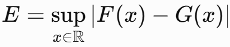
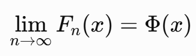
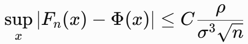
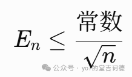
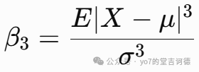
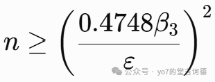
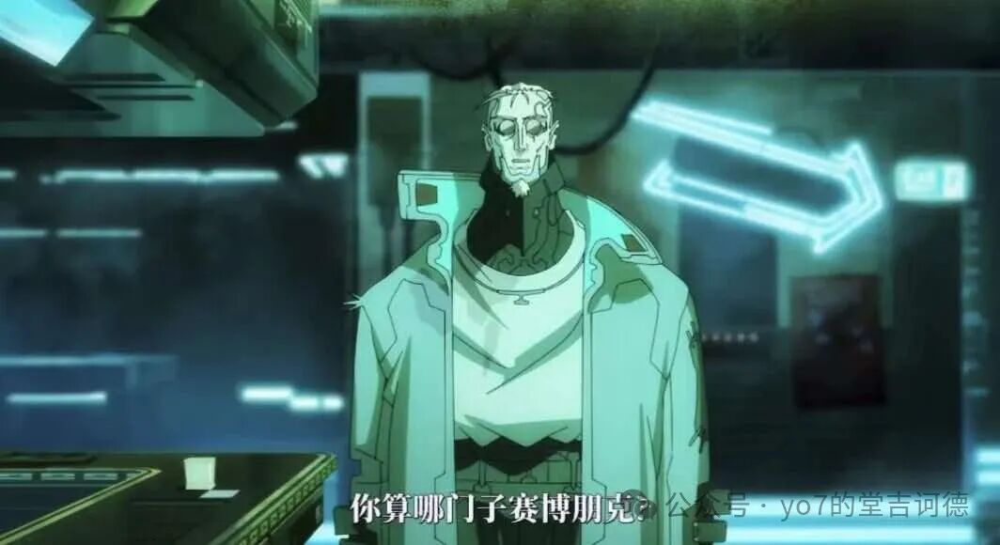

一。概率论正太分布这里其实会有一个疑惑，就是正太分布是参数足够大的情况下的近似，但如果要应用到现实中，我们该如何衡量或者说量化这个（参数大）的概念，怎么定义才能更好地近似假设我们用一个正态分布 G去近似某个真实分布 F，就是要来研究这个E中心极限定理告诉我们这里我们需要引入Berry–Esseen定理，在独立同分布的这一版本中，可取 C=0.4748。这一上界来自Berry–Esseen不等式的常数改进研究https://doi.org/10.48550/arXiv.1111.6554这个公式告诉我们，正态近似的精度至少可以从两个因素进行控制1。样本量随着样本量增加，误差上界会以 n^-1/2的速度减小2。控制形状的平均数和方差这个β能够反映原始分布中较大偏差的影响所以联立一下，这个样本量就有了大小的一个定量的不等式这里约束就是要求正态近似的最大累积概率误差不超过varepsilon当然还有就引出我们究竟应该怎样定义“近似得好”研究总体概率规律的话就使用全局绝对误差，研究低概率事件的话就使用相对误差（因为对于极端事件，正态近似在尾部相对误差意义下不一定准确）当然如果一个近似模型不够准确，还可以利用原始分布的更高阶信息，系统地修正，控制和改进近似误差。二。赛博朋克第二季就是看完就是很平淡，想说些什么又感觉点到为止了，第一季的Lucy和David我是很能共情并且非常有记忆点，但这一季人物的记忆点有点少了，毕竟这季确实是群像，但人物给人是一种莫名其妙的感觉的摩羯太超模了，直接化身万磁王，两个普通人D和塔莉亚像极了在ai时代用ai横行霸道的我们，罗曼就一直照相，其实感觉稍微有点突兀，可能是一种对于影视作品这种形式的一种情怀吧，超梦可能就象征三体中类似的VR，但这个也确实有点触动，我们一直在模拟现实的感受，但当技术真的实现，虚拟和现实到底需不需要设定边界，我感觉长时间沉浸在支线虚拟宇宙确实对主宇宙产生很大影响，需要设定一定的边界进行隔离金王这个weak怎么说呢，虽然毫无存在感，但应该设定就是承接第一季的一些内容，讲得了赛博精神病后普通人的生活，这其实倒也没什么可以喷的康陶虽说是荒坂的一个小喽喽，但荒坂现在确实衰弱太严重了，给我感觉就是这两个公司没什么太大区别，然后就是Talia她爸，感觉剧中虽说他是公司走狗，但又感受不出他对这公司到底有多么拼命，她妈也挺莫名其妙的，感觉保护女儿有点做作，确实没有第一季David的妈的表现力强，而且David的妈只出场了一集罗曼和塔莉亚的cp也莫名其妙啊，真就是因为拍照好看吗，那也确实，毕竟都是十几岁的小孩子，想着我也挺单纯的，一个点打动我也确实会恋爱脑，看到结局真的笑了呀D最后和ai私奔了，其实仔细想想也挺合情合理的吧，毕竟前面是因为复仇，但又是因为不敢直面是因为自己害了族人（不过这里那个荒坂外包任务给漩涡帮是真没绷住，捅了个这么大的篓子，蝴蝶效应的具象化），最后其实和ai意识融合后找到了一定的意义吧这个漩涡帮也太招笑了，什么都打不过，做外包的人物也把抓人变成屠村中间那个对荒坂极度仇恨的Emily也是莫名其妙，第一季的贝莉卡与亚当重锤的对枪是真的震撼，但Emily的死和整个人的形象却没有一点能记忆的点，也没有很矛盾的点，感觉有跟没有一个样，跟其他角色也没有什么联系，就突然冒出来了那个技术狂魔Miguel也有点刻意，就是明显感觉出编剧想把这个角色复杂化，就不是完全反派，但她的出发点就是为了保全技术摩羯？有点刻板印象了，虽然说能够感受到作者想让剧情有深度，但有点刻意模仿第一季的感觉音乐和动画还是夯爆了，剧情和人物可惜了